The GeometryFilter has a Detailed mode that lets you filter any specific IFME geometry types from FME's data model.
After completing this lesson, you’ll be able to:
Setting the appropriate geometry type is often necessary when writing data to a new format. For instance, you might read data from a PostGIS database table that (optionally) allows mixed geometries, but you need to write those features to an Esri geodatabase that restricts features to a single geometry type. What do you do in such a situation?
Geometry is part of the feature type schema, and you can view it in the reader and writer Feature Type parameters:
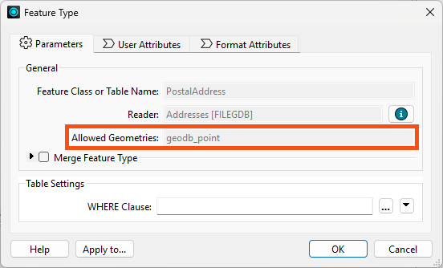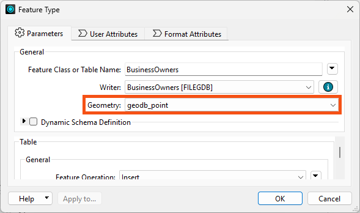
Reader feature types (on the left) only display the Allowed Geometries from the source data and cannot be changed. Writer feature types (on the right) display the Geometry, and you can edit them to control what geometry type FME writes. If you don't set this parameter for formats that require it, the translation will fail. If the writer feature type receives invalid geometry, FME will drop and not write the features. The Translation Log will issue a warning for each feature like this:
FileGDB Writer: Failed to write Geometry to feature class 'lines' with geometry type 'esriGeometryPolyline'. Dropping containing feature
The geometry type reported here is format-specific. You can learn more about these definitions and their correspondence to FME's geometry model by reading the reader/writer documentation for that format.
The GeometryFilter transformer simplifies workflows by isolating features based on their geometry type. For example, you might filter a dataset of mixed geometries to separate points from polygons.
Steps to Use the GeometryFilter:
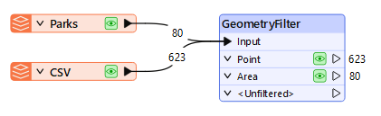
Features with geometry not matching any selected types will come from the <Unfiltered> port.
The GeometryFilter has a Detailed mode that lets you filter any specific IFME geometry types from FME's data model.
The GeometryCoercer transformer forces features into a specific geometry type where possible. For example, you can coerce:
The GeometryCoercer is strict about changing a feature's geometry type. For example, you can't coerce points into point clouds. Unaffected features will come out of the Untouched port.
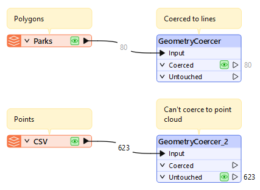
We'll cover other transformers that modify geometry in the next lesson.
Amar is continuing to learn about FME's geometry handling. He is reading a table from a PostGIS database called public.BusinessOwners. It contains information about the location of local businesses.
Amar opens the starting workspace in FME Workbench (2024.2 or later).
This workspace requires access to a PostGIS database to work.
If you are taking a Safe Software-hosted training course, this database connection should already exist and you can skip to step #2.
He expands FME Training PostGIS Database [POSTGIS] in the Navigator, double-clicks the Connection parameter, and chooses Add Database Connection.
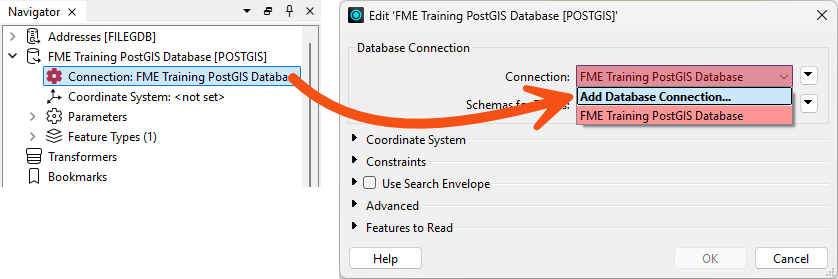
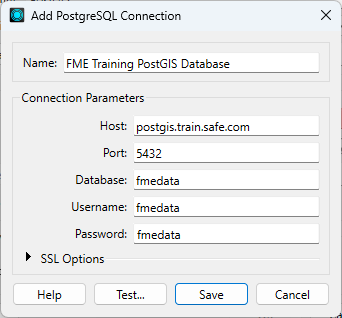
He clicks Test and then Save. FME tests the connection and confirms that it is working.
He runs the workspace to generate caches. He inspects the public.BusinessOwners cache and realizes that some of his points have null geometry and attributes:
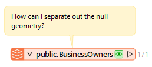
Inspecting any feature with <null> attribute values shows these features also do not have geometry, as it is missing from the Feature Information Window:
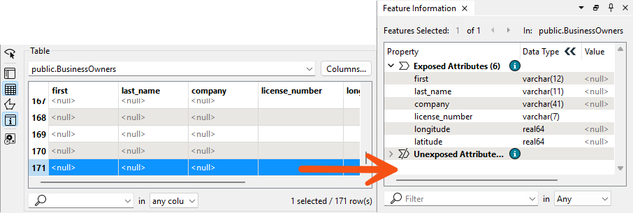
He'd like to filter out these null geometry features before writing to an Esri Geodatabase.
To ensure he only writes valid points, Amar adds a GeometryFilter and connects it to the public.BusinessOwners reader feature type.
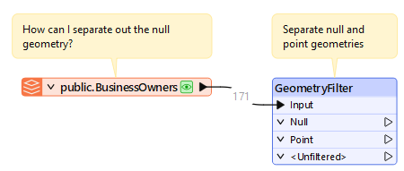
He double-clicks the GeometryFilter and sets Output Ports to Null and Point:
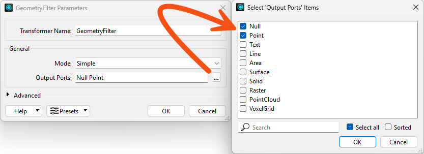
He clicks OK to close the dialog.
He runs the workspace to view the results and notes the number of null and valid point features.
Now that he has point features, Amar wants to write them out to Esri Geodatabase.
He uses Quick Add to add an Esri Geodatabase (File Geodb Open API) writer configured like this:
| Format | Esri Geodatabase (File Geodb Open API) |
| Dataset | C:\FMEData\Output\Training\BusinessOwners.gdb |
| Parameters > Overwrite Existing Geodatabase | Enabled |
| Feature Class or Table Definition | Automatic... |
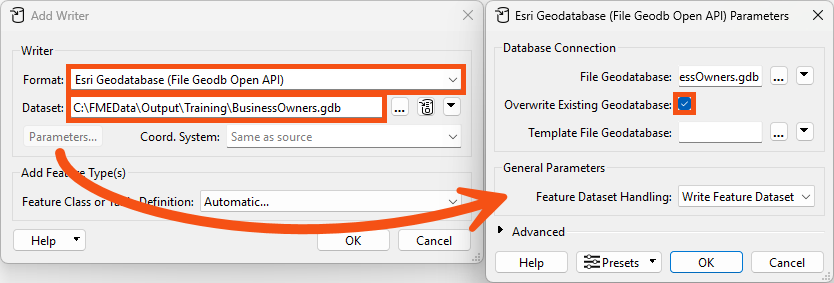
He clicks OK to add the writer. A Feature Type dialog appears where he can configure the new feature type. He sets Feature Class or Table Name to BusinessOwners.
Then he clicks the dropdown and chooses from the format's supported geometry types for Geometry, selecting geodb_point:

He clicks OK, and FME adds the writer feature type to the canvas.
He connects the GeometryFilter's Point port to the BusinessOwners writer feature type and runs the workspace.
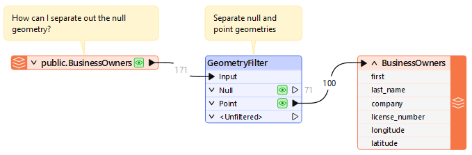
FME only writes out the valid point features, filtering out the null geometry. He confirms by using Inspect Written Data on the BusinessOwners writer feature type and confirms only points are present:
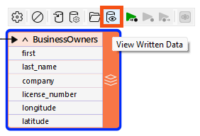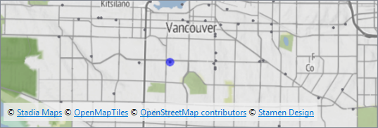
Map tiles © Stadia Maps, © OpenMapTiles, © OpenStreetMap contributors, © Stamen Design
If these features had more information, like invalid geometry he could repair or attributes that he could use to identify and fix the data, he could keep working on the data from the Null port. However, neither is true, so he'll discard the null geometry features.
Amar also has a set of address Point features in his workspace in the PostalAddress feature type. He'd like to create MultiPoints from them using the Postalcode attribute to group the Points. What transformer can he use for that? How many MultiPoints does it result in?
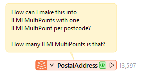
Experiment to find out, taking note of your answers; you'll need them for the Quiz.